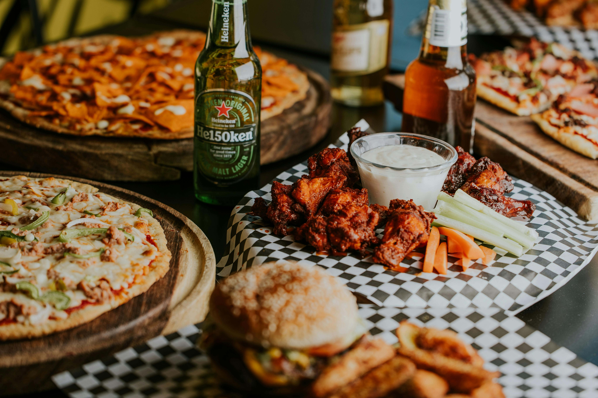
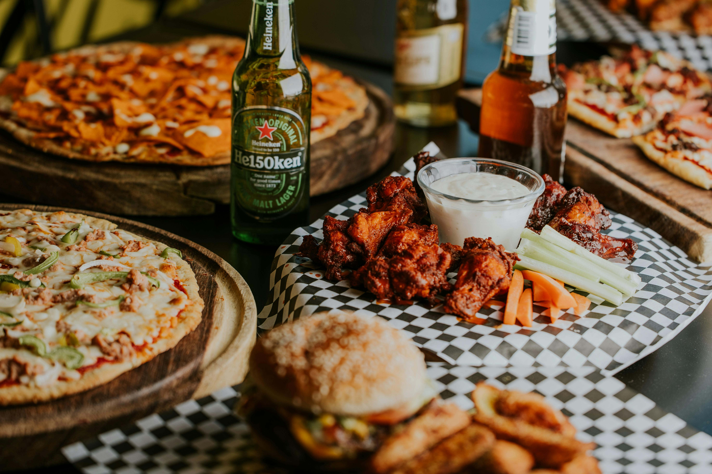

 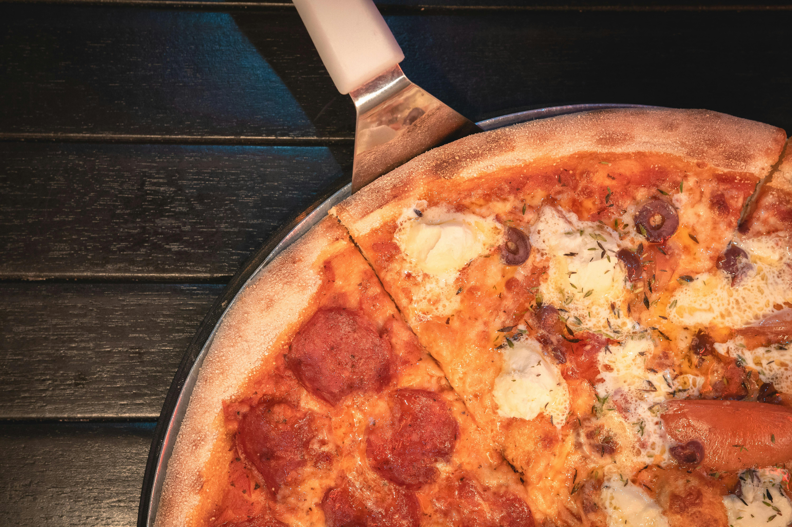
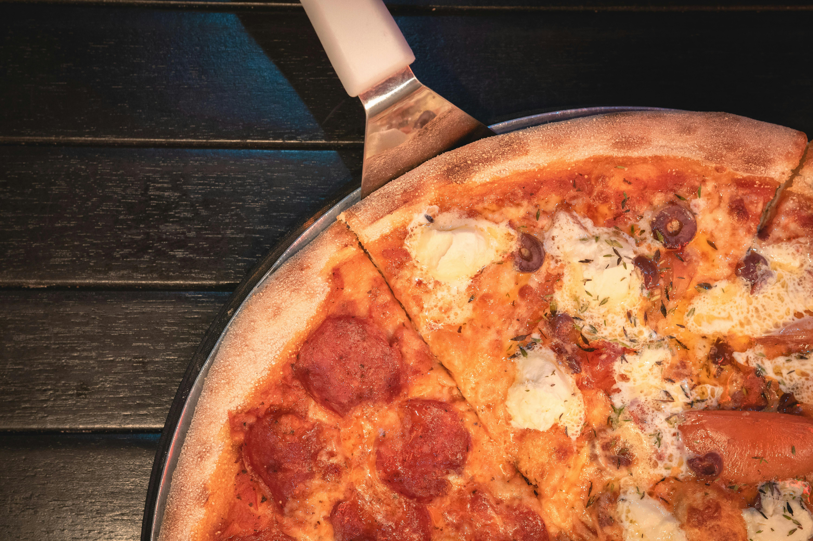
 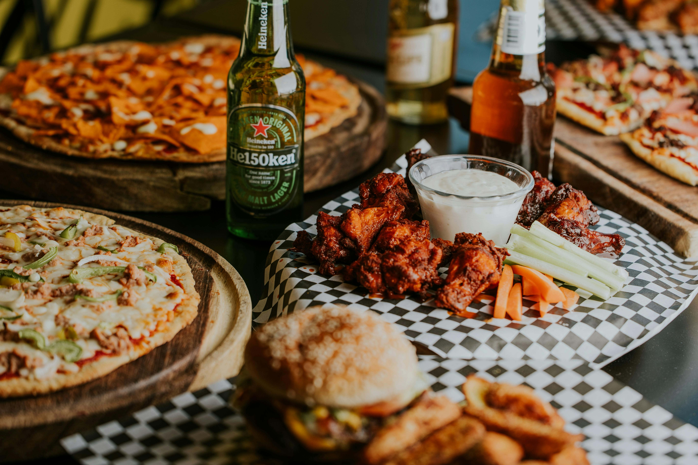
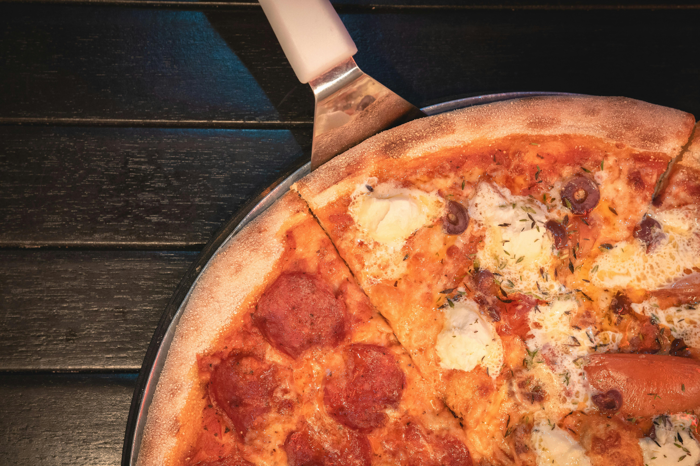
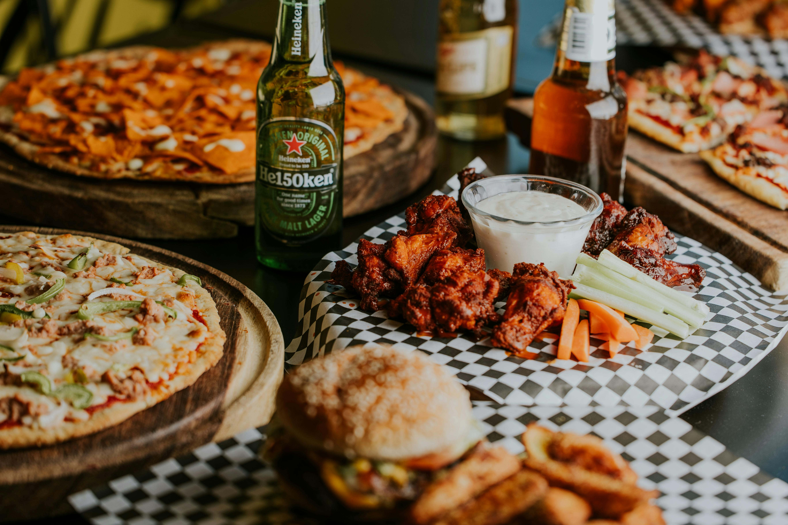
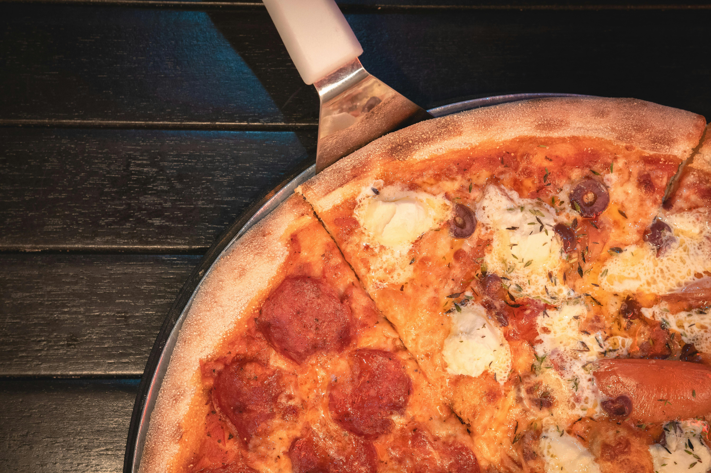
Somos un negocio de comida rápida apasionado por ofrecerte los mejores sabores en un ambiente acogedor y familiar. Nuestro objetivo es brindarte una experiencia culinaria única, con ingredientes frescos y de alta calidad, preparados al momento para que disfrutes de una comida sabrosa y satisfactoria. Ya sea que busques una cena rápida con amigos, un lugar para relajarte después del trabajo, o simplemente quieras satisfacer tus antojos, estamos aquí para servirte con una sonrisa y un menú que no te dejará indiferente.
Nuestros patrocinadores
 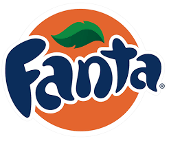
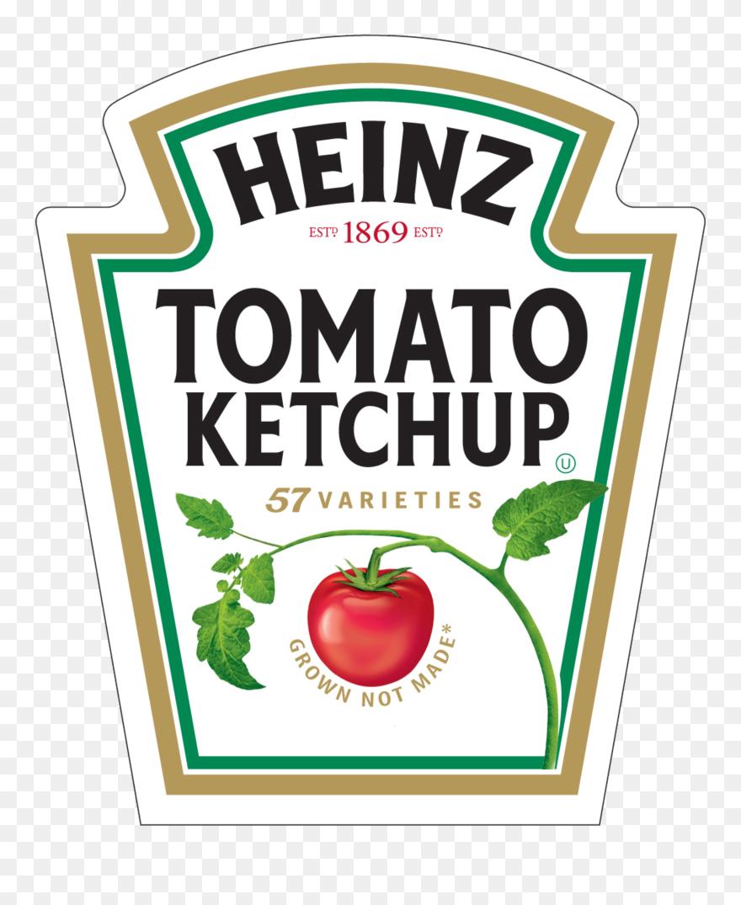
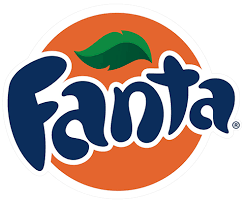
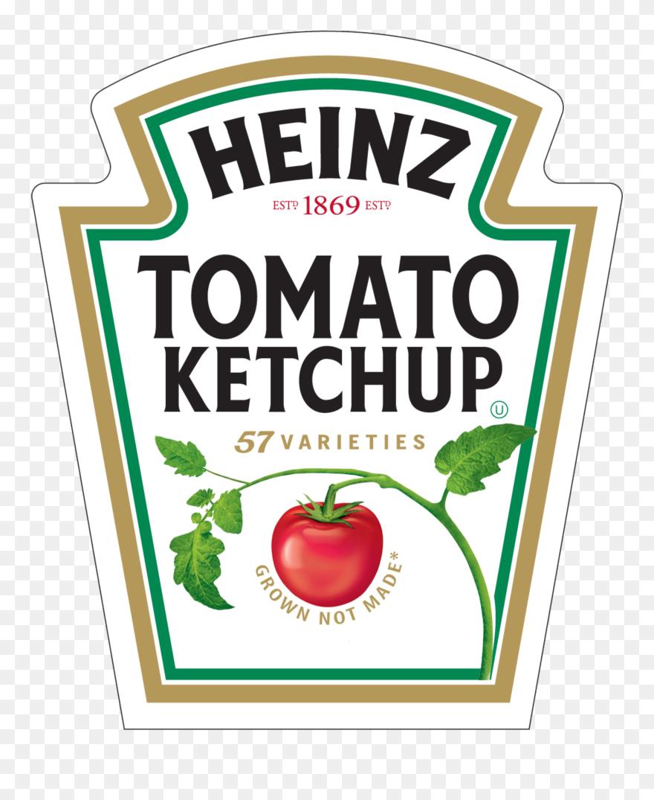